Chánh niệm
Yoga với quả bóng to cho bé: lợi ích và cách chơi, cách tập an toàn
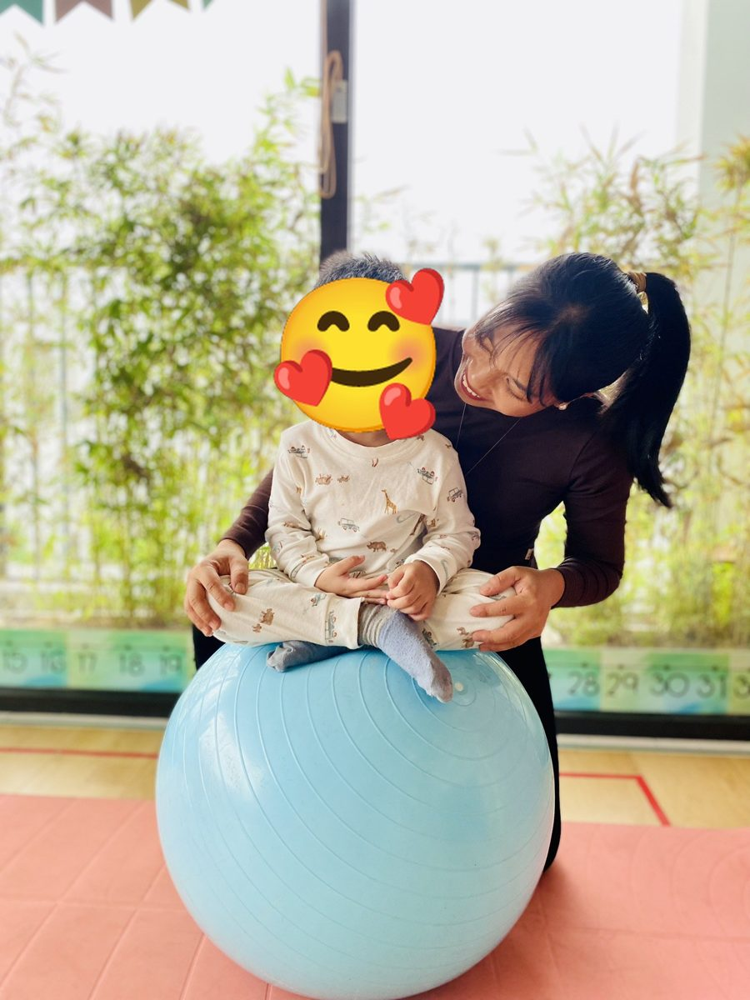
Hôm cô mang quả bóng xanh to vào lớp, cả lớp ồ lên. Bạn nào cũng muốn chạm. Có bạn ôm luôn, không chịu buông.
Rồi lần lượt từng con được lên bóng. Ngồi. Nằm sấp. Nằm ngửa. Bạn cười khanh khách, bạn nằm im thin thít, bạn nhìn cô như hỏi: “Cô có giữ con không?”
Cô có giữ. Suốt từ lúc lên đến lúc xuống. Và cũng nhờ quả bóng mà cô hiểu thêm từng con một: con nào thích bay, con nào cần được ôm, con nào cần thêm thời gian.
Bài này cô viết lại cách cô dùng quả bóng to trong lớp Yoga trẻ em, để thầy cô và bố mẹ có thể chơi cùng con một cách vui và an toàn. Nếu đang tìm về quả bóng nhỏ cả lớp cùng ôm, cô có bài Quả bóng xanh trong lớp Yoga.
Quả bóng to giúp gì cho các con?
Quả bóng tròn, mềm, luôn hơi chuyển động. Chính vì không đứng yên nên nó dạy cơ thể con rất nhiều điều.
Những người làm trị liệu cho trẻ hay nói về “giác quan tiền đình”, tức cảm nhận thăng bằng và chuyển động nằm ở tai trong. Nhà trị liệu hoạt động A. Jean Ayres đã viết rất kỹ về điều này trong cuốn Sensory Integration and the Child (1979). Theo kinh nghiệm chung của nghề, chuyển động chậm, đều, lặp lại thường giúp trẻ dịu xuống. Chuyển động nhanh, đổi hướng thì làm trẻ tỉnh táo, hưng phấn. Cô dùng điều này mỗi buổi: muốn lớp yên thì lăn chậm, muốn lớp vui thì nảy nhanh hơn một chút.
Bóng to cũng từng được thử làm ghế ngồi trong lớp học. Năm 2003, nhóm của Denise Schilling đăng trên tạp chí American Journal of Occupational Therapy một nghiên cứu nhỏ với học sinh tiểu học có tăng động giảm chú ý. Khi ngồi bóng thay ghế, các bạn ngồi yên tại chỗ lâu hơn và viết được nhiều chữ rõ ràng hơn. Nghiên cứu nhỏ thôi, cô không coi đó là phép màu. Nhưng nó khớp với điều cô thấy: cơ thể được chuyển động nhẹ thì đầu óc dễ ngồi yên.
Chọn bóng và chuẩn bị
- Cỡ bóng: lớp cô dùng bóng tập 55 đến 65 cm. Bóng này cho cô đỡ bé ngồi, nằm. Nếu bé tự ngồi trên bóng (có người lớn giữ), chọn bóng sao cho khi ngồi, đùi con ngang hoặc hơi cao hơn đầu gối, bàn chân chạm sàn.
- Chọn bóng chống nổ (trên vỏ thường ghi “anti-burst”). Nếu thủng, bóng xì từ từ chứ không nổ bung.
- Bơm vừa: ấn tay thấy lún nhẹ. Bóng quá căng thì cứng, dễ lăn trượt.
- Thảm chống trượt dưới bóng. Xa góc bàn, cạnh tủ, đồ chơi rơi vãi.
- Chân trần hoặc tất chống trượt. Quần áo co giãn, không đeo đồ có cạnh sắc.
- Người lớn quỳ hoặc đứng tấn thấp ngay sát bóng, hai tay sẵn sàng. Lưng người lớn cũng cần được giữ thẳng, đừng cúi gập lâu.
Video: một vòng tập bóng cùng cô
Hơn một phút. Chín khoảnh khắc thật trong lớp, từ ngồi bông sen đến nằm cầu vồng. Vòng tròn ở góc ảnh nhắc nhịp thở: hít vào, thở ra.
8 bài với quả bóng to
Đi từ dễ đến khó: ngồi, rồi nằm sấp, rồi nằm ngửa. Buổi đầu chỉ cần bài 1 và bài 3. Bài nào cũng có cô hoặc bố mẹ giữ con bằng cả hai tay.
-
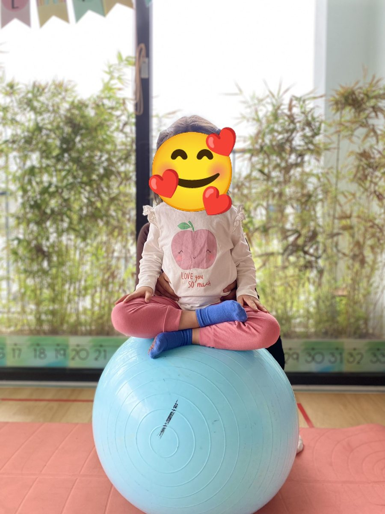
1Bông sen trên quả bóng
Khi nào: Đầu giờ, để con làm quen với bóng. Hợp cả với bạn còn rụt rè.
Cách làm: Bé ngồi xếp bằng trên đỉnh bóng, hai tay đặt lên gối. Cô đứng hoặc quỳ phía sau, hai tay giữ hai bên hông con. Cô nói nhỏ: “Bông sen nổi trên mặt hồ. Con nhắm mắt nếu thích.” Thở 5 hơi.
Điều cô để ý: Ngồi trên một mặt tròn, cơ thể tự tìm thăng bằng. Lưng con thẳng lên mà không cần nhắc. Có bạn nhắm mắt, miệng cười tủm tỉm, ngồi yên lâu hơn cả trên thảm.
-
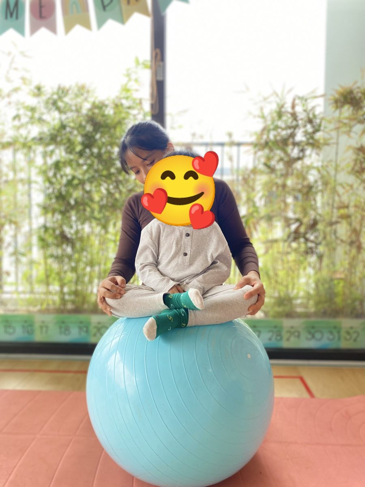
2Nảy nhẹ như sóng
Khi nào: Khi con đã quen, ngồi vững rồi.
Cách làm: Vẫn ngồi xếp bằng. Cô giữ hai gối con, ấn bóng xuống thật nhẹ rồi thả cho bóng nảy lên. Chậm thôi, như sóng vỗ. Đếm cùng con: “Một, hai, ba… sóng to… sóng nhỏ.” 8 đến 10 nhịp rồi dừng hẳn, ngồi yên một hơi thở.
Điều cô để ý: Nhịp nảy đều và chậm làm các con dịu xuống. Nảy nhanh thì con phấn khích, cười to. Cô chọn nhịp theo việc mình cần: muốn lớp yên thì chậm, muốn lớp tỉnh thì nhanh hơn một chút.
-
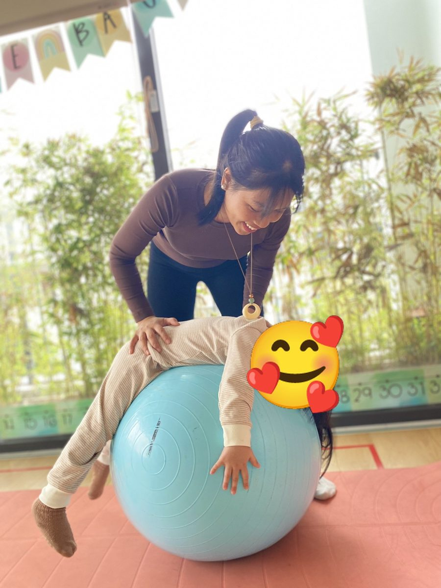
3Ôm trái đất
Khi nào: Khi con mệt, con nhớ mẹ, con cần được ôm.
Cách làm: Bé quỳ trước bóng rồi ngả người nằm sấp lên, bụng và ngực áp vào bóng, má tựa lên bóng. Hai tay buông xuôi hai bên. Cô đặt một tay lên lưng, một tay lên hông con. “Con đang ôm cả trái đất đấy.” Ở yên vài hơi thở.
Điều cô để ý: Má áp vào mặt bóng mát, bụng được đỡ trọn. Cô thấy vai các con hạ xuống rất nhanh. Bạn nào hay níu mẹ ở cổng lớp lại rất thích bài này.
-
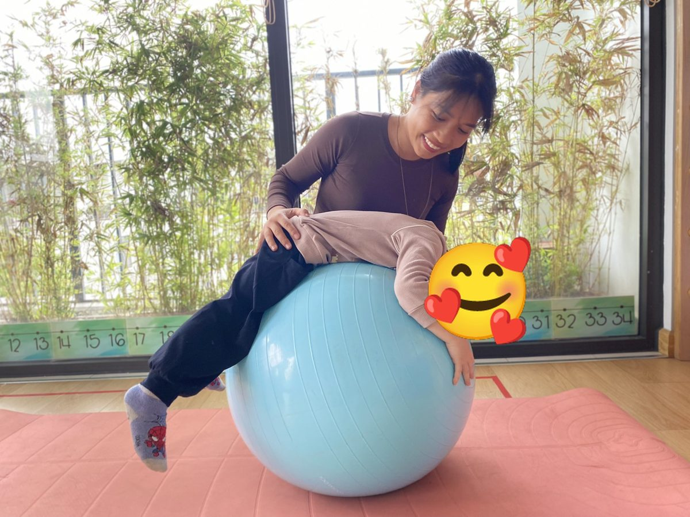
4Lăn tới, lăn lui
Khi nào: Sau phần chạy nhảy, để thân mình dịu lại.
Cách làm: Bé nằm sấp như bài trên. Cô giữ hông con, lăn bóng tới trước một chút khi con thở ra, kéo về khi con hít vào. Bàn tay con chạm thảm rồi rời thảm. Lăn 5 đến 8 lần, thật chậm.
Điều cô để ý: Lăn theo hơi thở thì con thở theo bóng mà không cần dạy. Cô luôn để tay trên người con, mắt nhìn mặt con. Con nhăn mặt là cô dừng.
-
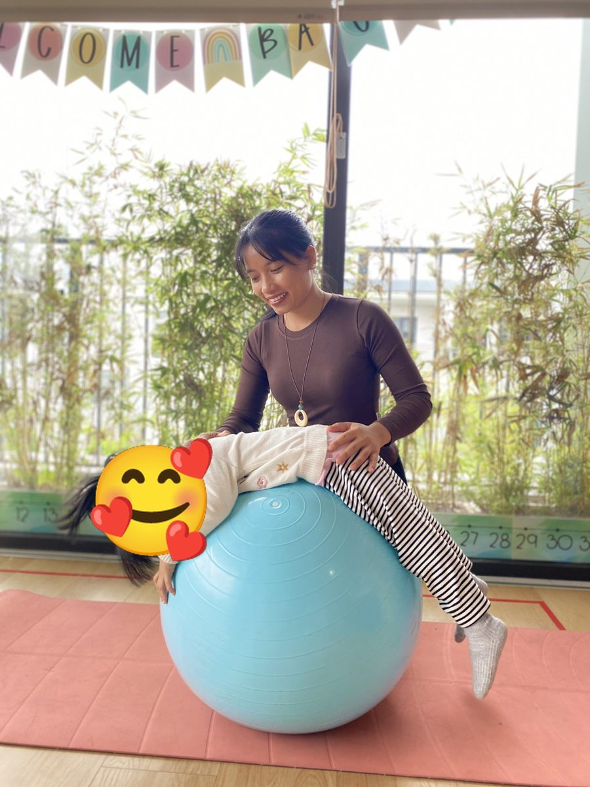
5Em bé buông tay
Khi nào: Với các bạn nhỏ nhất, 2 đến 3 tuổi.
Cách làm: Bé nằm sấp vắt ngang qua bóng, đầu và tay buông về một phía, chân về phía kia. Cô dùng cả hai tay đỡ lưng và hông, lắc thật khẽ sang hai bên như đưa võng.
Điều cô để ý: Các bạn nhỏ chưa hiểu chữ “thư giãn”. Nhưng được đưa võng thì hiểu ngay. Có bạn nằm im, mắt lim dim. Có bạn nhìn cô rồi cười.
-
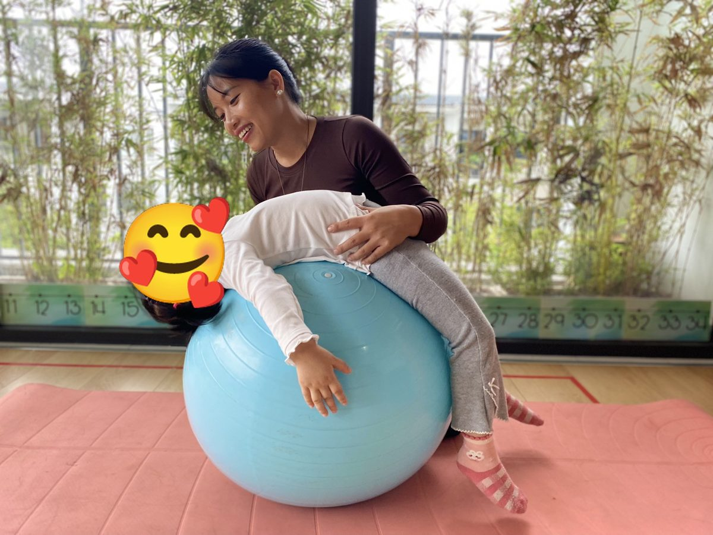
6Cầu vồng trên quả bóng
Khi nào: Khi con đã quen nằm sấp. Bài mở ngực, rất hợp sau giờ ngồi học lâu.
Cách làm: Bé ngồi trên bóng, cô đỡ lưng rồi cùng con ngả ra sau, cho lưng con nằm ôm theo đường cong của bóng. Hai tay dang rộng, đầu thả nhẹ. Cô giữ hông và bụng con. Thở 3 đến 5 hơi rồi cô đỡ con ngồi dậy từ từ.
Điều cô để ý: Cả mặt trước cơ thể được mở ra: ngực, bụng, cổ. Ngày thường các con cúi xuống nhiều, cúi đọc, cúi chơi. Nằm cầu vồng là được duỗi ngược lại. Lần đầu có bạn hơi sợ. Cô đỡ chắc, nói chậm, con sẽ thả dần.
-
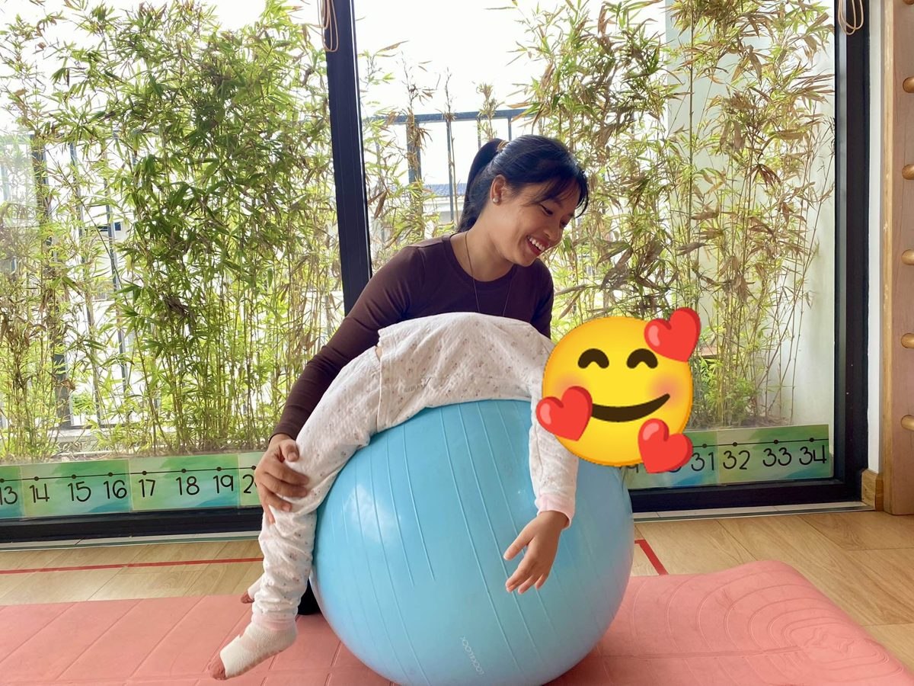
7Ngắm bầu trời
Khi nào: Khi con muốn chơi tiếp, chưa muốn nằm yên.
Cách làm: Vẫn nằm ngửa như cầu vồng. Cô hỏi: “Con thấy gì trên trời? Có mây không? Có con chim nào không?” Con kể, cô lăn bóng thật nhẹ theo câu chuyện.
Điều cô để ý: Lúc nằm ngửa, con nhìn thấy mọi thứ lộn ngược. Các con thấy lạ và vui. Cô nhìn thẳng vào mắt con, cười với con. Sự tin tưởng nằm ở ánh mắt ấy nhiều hơn ở đôi tay.
-
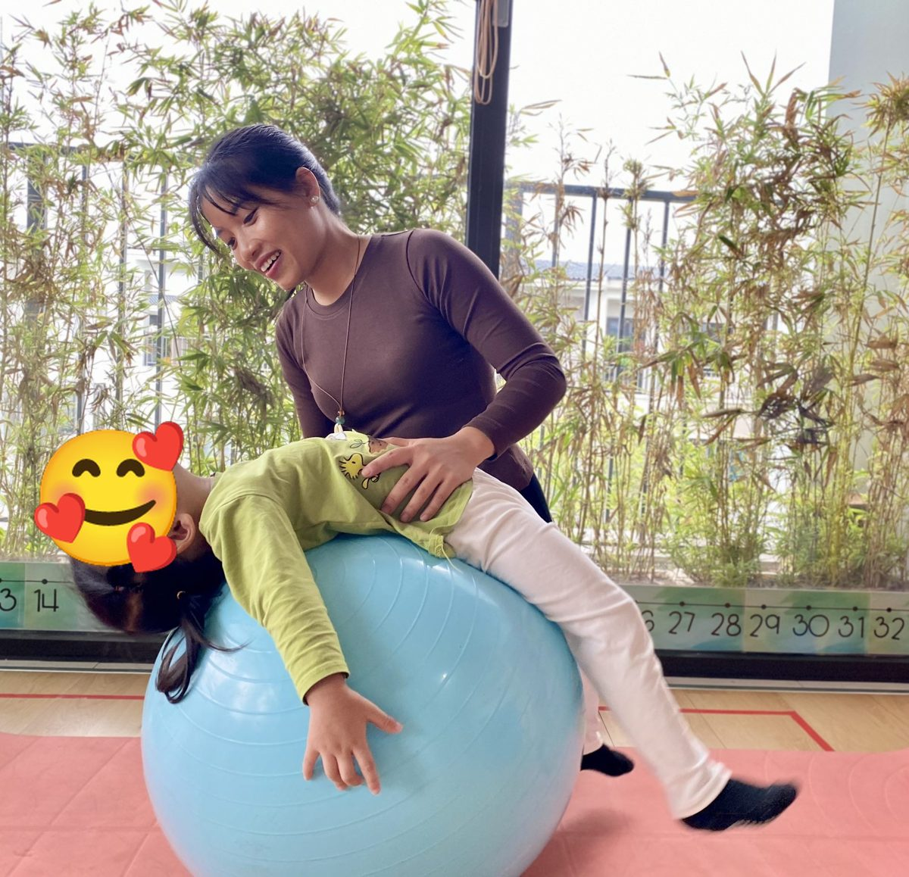
8Thả mình chạm thảm
Khi nào: Cuối phần bóng, trước khi nằm thư giãn trên thảm.
Cách làm: Từ tư thế cầu vồng, cô lăn bóng lui một chút cho đầu và tay con xuống gần thảm, đầu ngón tay chạm đất. Chân hơi nhấc lên. Thở ra dài bằng miệng: “Phù…” Giữ 2 đến 3 hơi rồi đỡ con về ngồi.
Điều cô để ý: Đầu chỉ xuống thấp một chút, không chống, không để đầu chịu sức nặng. Con nào thấy chóng mặt thì cô đỡ ngồi dậy ngay. Phần lớn các bạn đứng dậy với gương mặt rất hồng, rất tươi.
Mỗi bạn một cách nằm
Cùng một tư thế nằm ngửa, mỗi con lại khác. Bạn há miệng cười như đang đi tàu lượn. Bạn nhỏ xíu nằm ngoan, mắt nhìn cô không chớp. Bạn thì vừa nằm vừa kể chuyện.
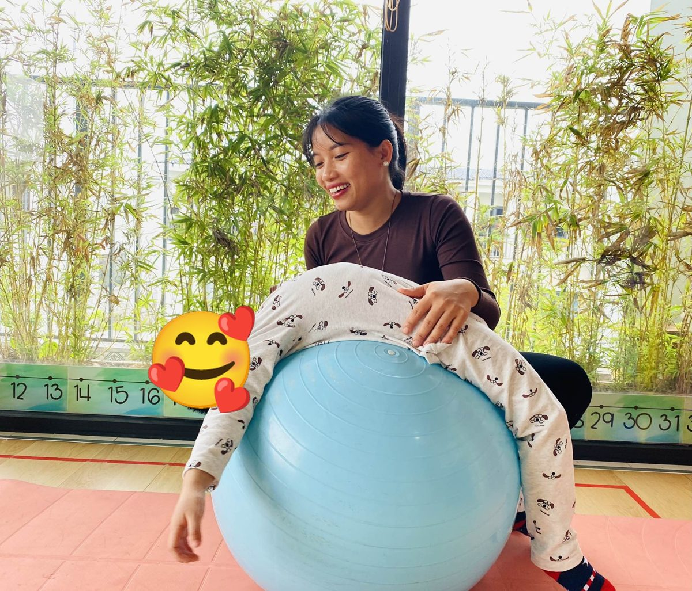
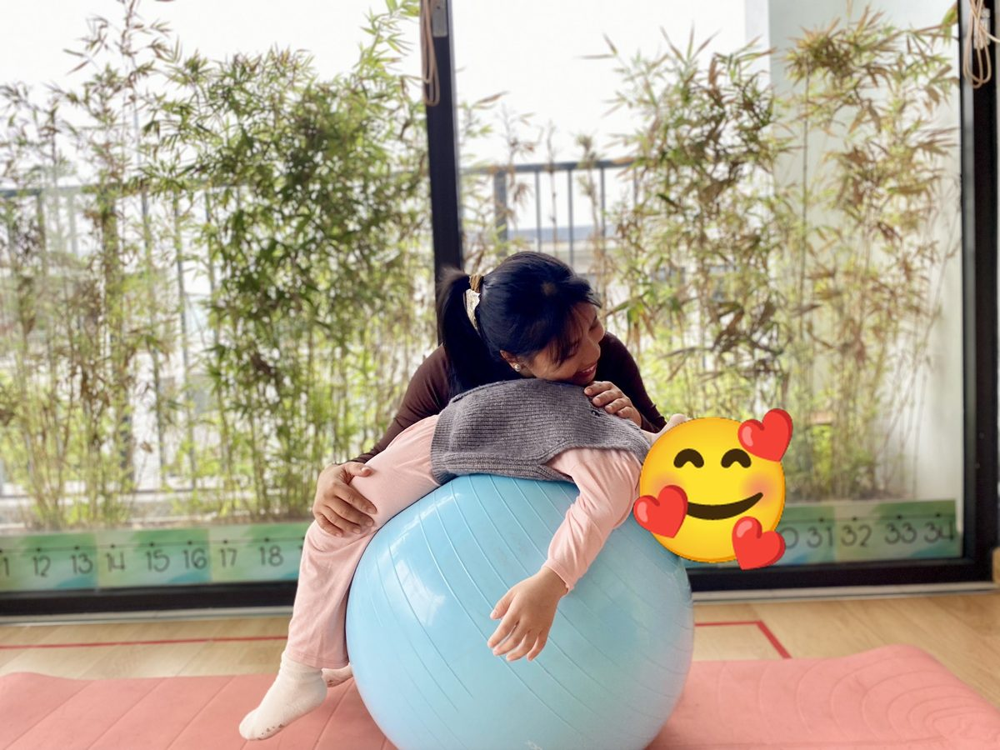
Cô không bắt bạn nào phải nằm “đúng”. Cô chỉ giữ con an toàn, và để con được là chính con trên quả bóng.
🔵 Nhịp lăn bóng theo hơi thở
Bấm “Bắt đầu”, rồi lăn bóng theo quả bóng trên màn hình: hít vào kéo bóng về, thở ra lăn bóng tới. Chọn “Chậm” để làm dịu, “Vui” cho lúc muốn chơi.
Trò chơi với quả bóng to
Bóng to không chỉ để nằm. Cả lớp chơi được, kể cả lúc chỉ có một quả.
- 🌊 Sóng biển. Cả lớp ngồi vòng tròn. Cô ngồi giữa, lăn bóng thật chậm tới từng bạn. Bạn nhận bóng đặt hai tay lên, hít vào một hơi rồi đẩy bóng về cho cô. Không được ném, chỉ được lăn. Ai đang giữ bóng là người “được thở”.
- 💓 Nghe tim quả bóng. Một bạn áp tai lên bóng, cô gõ nhẹ đầu ngón tay ở phía bên kia. Con đoán: gõ mấy cái? Gõ nhanh hay chậm? Cả lớp im phăng phắc để bạn nghe.
- 🐢 Rùa mang mai. Bé bò bốn chân, cô đặt bóng nhẹ lên lưng (cô vẫn giữ). Con bò thật chậm vài bước để “mai” không rơi. Bài này cho lưng con thẳng mà con tưởng là chơi.
- 🎈 Đổi chỗ cho bóng. Hai bạn ngồi đối diện, kẹp bóng giữa hai bàn chân, cùng nhau nâng bóng lên một chút rồi hạ xuống. Phải nhìn nhau, phải đếm cùng nhau.
Trong lúc một bạn lên bóng với cô, các bạn khác ngồi trên thảm làm “ngọn núi”, “bông sen”, đếm hơi thở cho bạn. Không ai phải đứng chờ không. Nhiều trò hơn ở bài 20 trò chơi trong lớp Yoga trẻ em.
🎯 Hôm nay con thế nào? Chọn bài cho con
Bấm vào tình trạng của con hôm nay, cô gợi ý bài phù hợp.
Chọn một ô ở trên nhé.
Cô thử trước, rồi mới cho con
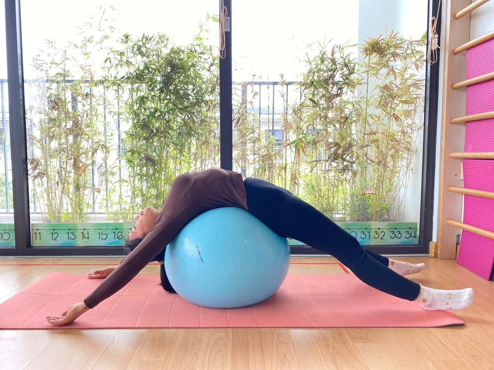
Bài nào cô cũng nằm thử trước trên bóng. Để biết lúc đầu thả ra sau thì cảm giác hơi chênh vênh thế nào. Lúc nào cần một bàn tay đỡ. Thở ra một hơi thì lưng giãn ra đến đâu.
Mình hiểu cảm giác ấy rồi, mình mới đỡ con đúng chỗ, nói với con đúng câu. Với người lớn, nằm ngửa trên bóng cũng là một cách rất dễ chịu để mở ngực sau một ngày dài.
Sau bóng to, cả lớp ôm bóng nhỏ
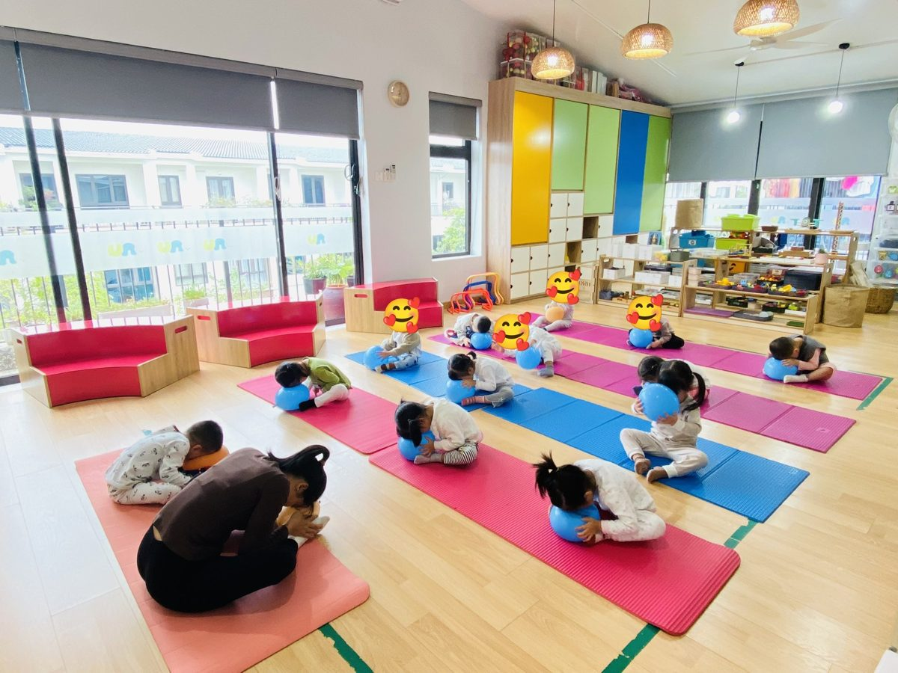
Bóng to thì từng bạn lên một. Nên cô thường kết thúc bằng bóng nhỏ, mỗi con một quả. Ngồi duỗi chân hoặc ngồi bướm, ôm bóng vào lòng, cúi người cho trán chạm bóng. Thở chậm. Lớp học lúc ấy yên đến mức nghe được tiếng quạt.
Cách cả lớp tập với bóng nhỏ, cô kể trong bài Quả bóng xanh trong lớp Yoga.
Không chỉ là quả bóng
Với Sophia, yoga cho trẻ em là chăm cả con người nhỏ ấy: thân thể, hơi thở, cảm xúc, và sợi dây nối con với người lớn. Quả bóng chỉ là một món đồ. Điều con mang về là cảm giác được đỡ trọn, được thở chậm, được cười giữa lớp.
Con vẫn cần ngủ đủ, chơi ngoài trời, chạy nhảy, ăn uống đều đặn. Bóng là một phần nhỏ, vui, trong cả một lối sống cân bằng.
Vài điều cô hay để ý
❓ Có nên không? Chạm để lật thẻ
Những câu bố mẹ, thầy cô hay hỏi cô khi mới dùng bóng to.
- Hai tay người lớn luôn ở trên người con, từ lúc lên bóng đến lúc xuống. Không để bé đứng trên bóng, không để bé tự nảy một mình.
- Lăn chậm, biên độ nhỏ. Bóng lăn quá xa thì người lớn không kịp giữ.
- Nhìn mặt con. Con nhăn mặt, khóc, cứng người thì dừng, đỡ con xuống, ôm con. Hôm sau thử lại từ bài dễ hơn.
- Đầu không chịu lực. Ở bài nằm ngửa, đầu chỉ thả nhẹ. Đỡ con ngồi dậy từ từ, đừng kéo tay giật lên.
- Hỏi ý bác sĩ trước nếu con đang bị ốm, có bệnh về tim, cột sống, động kinh, hoặc vừa phẫu thuật. Con hay say xe, chóng mặt thì chỉ lăn rất chậm và ít.
- Mỗi bé 1 đến 2 phút mỗi lượt. Đủ rồi. Còn lại là thời gian các bạn khác được lên.
🌟 Điều các con mang về
Ahimsa là không làm tổn thương. Cô đỡ con thật chắc, lăn thật chậm, dừng khi con sợ. Con học rằng thân thể mình được tôn trọng.
Ishvara pranidhana là buông mình, tin tưởng. Một em bé nằm thả lỏng trên bóng, tay buông, mắt nhìn cô cười. Đó là buông mình theo cách đơn giản nhất.
Một quả bóng tròn. Hai bàn tay giữ. Một hơi thở chậm. Vậy là đủ cho một buổi chiều thật đẹp.
🌿 Thầy cô muốn đưa bóng to vào lớp mình?
Cách đỡ bé đúng chỗ, sắp xếp lượt cho lớp đông, xen bóng với trò chơi và nằm thư giãn… cô hướng dẫn kỹ trong khóa Đào tạo Huấn luyện viên Yoga trẻ em. Bố mẹ muốn con được học ở lớp cô thì nhắn cô hỏi lịch nhé.
Đọc thêm: Quả bóng xanh trong lớp Yoga, 10 phút massage cuối buổi và Ứng dụng yoga cân bằng phục hồi cho bé nhút nhát, thiếu tự tin.